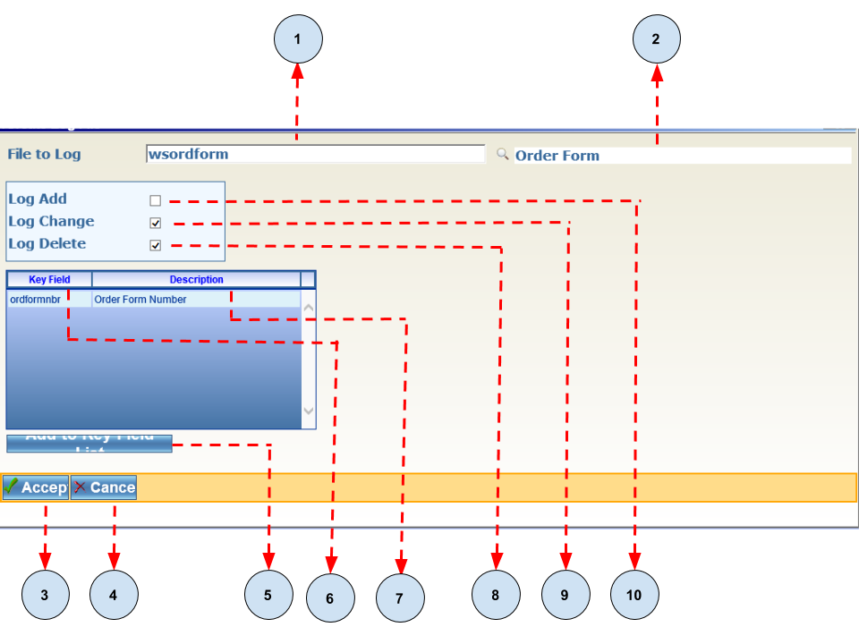
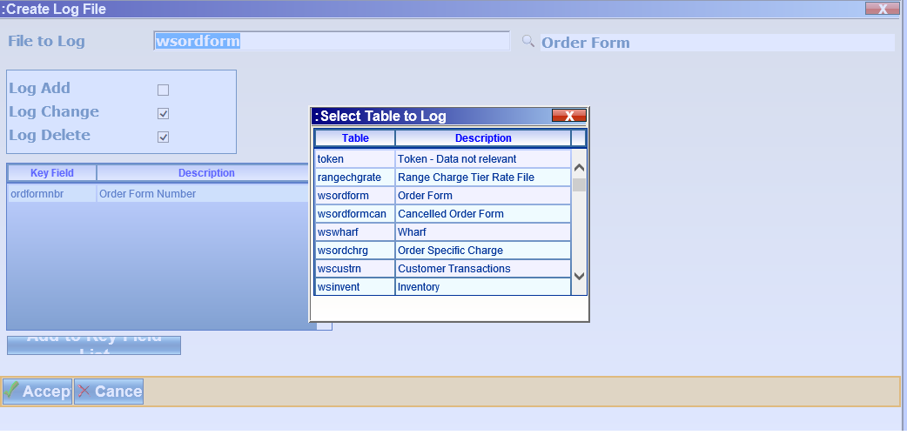
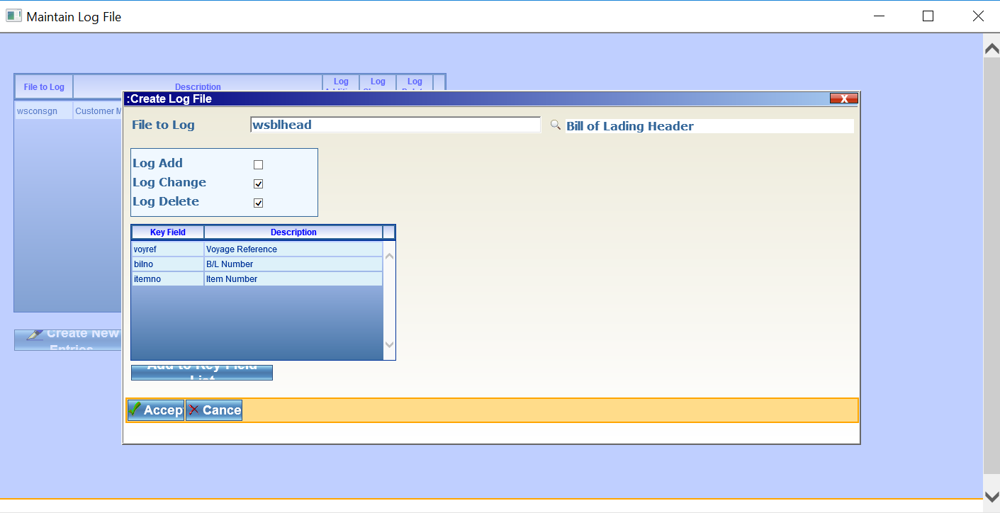

Database Logging¶
Overview¶
Database logging is an integral feature of the Advantum Software Development Framework. All database actions which alter the contents of tables are captured automatically by the logging framework.
MAINTAINLOGFILE Program¶
The MAINTAINLOGFILE is used to configure the table(s) and actions which will be logged for each table. Actions which can be logged for each table are:
- Addition - This is when a record is added to a table.
- Change - This when a record is updated.
- Delete - This is when a record is removed from the table.
- The diagram below shows an image of the MAINTAINLOGFILE table.
It consists of seven(7) main sections which are described below:
- File to Log - This represents the table(s) which will be logged.
- Description - This is a user friendly description of the table.
- Log Addition - If this option is selected all records which will be added will be logged.
- Log Change - If this option is selected all records which have been changed will be logged.
- Log Delete - If this option is selected all records which have been deleted will be logged.
- Create New Entries - *Allow for the addition and configuration of tables for logging.
- Refresh - Restores the application to its default state.
Creating Log File Screen¶
When The Create New Entries button is clicked it will show the Creating Log File Screen which is shown below:
It consists of the ten(10) sections which are described below:
File to Log - This a search field which allows database tables to be selected. It launches a window showing a list of all tables when the mouse cursor is place in the field. An example is shown below:
Table Description - This is a description of the table to be logged.
Accept Button - This allows the changes made to be saved.
Cancel Button - Returns the user to the MAINTAINLOGIFILE application.
Add To Key Field To List - Adds fields that will always be logged. By default the primary key of the table is added.
Key Field - This is the name of the filed(s) which are to be logged.
Description - This is the field description.
Log Delete - If this option is checked all delete operations on the table will be logged.
Log Change - If this option is checked all update operations on the table will be logged.
Log Add - If this option is checked all insert operations on the table will be logged.
Adding A Log Table¶
Step One - Add a table¶
To add a table, click in the File to Log field and choose a table. As shown below:
Step Two - Add additional columns¶
By default the primary keys for the table are added as shown below:
Note
Other columns can be added to the primary key list. These columns would become mandatory for logging and are selected by default when the reporting tool is launched.
Step Three - Accept the changes¶
Click the Accept Button to apply the changes.